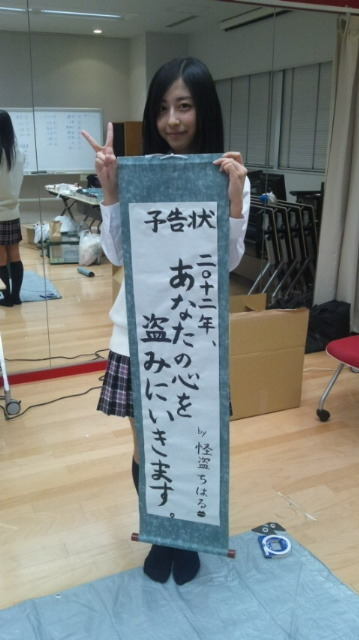

| 2012/01 06 Fri | *わかったこと* |
こんばんわん
今日は、
乃木坂46新年の挨拶させてくださいっ会
でした(
o
^ω^
o
)ノ
150人限定というアットホームなかん じで
初心に還ることができました
控え室や舞台裏では…
「オーディションのときこうだったょね〜っ」
「めっちゃ懐かしいなぁ」
とか喋ってたんょ(´・ω・｀)
本番でもみんなの素な表情とか見れたんぢゃないかな？笑
って思います
今日はなにをやったかと言うと〜っ
お餅つき＆
ついたお餅をおしるこにして振る舞う＆
書き初めに今年の抱負を発表＆
ハイタッチ会!!
いぇい
楽しかったー(*´д｀*)ノ
高山ってたー(*´ω｀*)ノ
そしてっちはるの今年の抱負!!
じゃぁん

盗みに行きますよーっ((わら
盗まれるしか←
あと今日は髪おろしてみた(
o
^_^
o
)ノ
メンバーちゃんにはこっちがいい
って
言われたんですけど…
どっちがいいかな？
そして2012年は、今日も言ったけど
デビューYEARなので
飛躍
の年になると思いますっ
なのでそれに伴い、ちはるも頑張ります

よろしくお願いしますo(｀^´*)
あと今日はね、
乃木坂になくてはならない
みゅうみゅう
のが帰ってきてくれました。(
*
^ω^
*
)
おかえりっ(
*
/□＼
*
)
みゅうみゅうが話してる途中から、涙が溢れて止まりませんでした。
ほんとに乃木坂が好きで、夢を諦めたくなくて、人生をかけて頑張っていきたい!!
という思いが伝わってきました。
メンバーにも、今日来て下さったファンの方にも、伝わったのでは？(つд｀)

みゅうみゅう、
ほんとにおかえりなさい。!!
これからもずっと、仲良くしてね＼(^o^)／
大好き

なんかみゅうみゅうへの告白みたいになっちゃった…(笑)
でも本当の気持ちだかんね!!
とゅうことで!!
今日は乃木神社で参拝をし、
みゅうみゅうに泣き、
もちをつき、
予告状を出し、
れいかの締めに
また泣きそうになり…
と色々忙しい１日でした（つд；*)
*
そして今日わかったこと
*
やっぱり私はみんなが大好きだ。
(質問には全て次回答ますね
)
もう日にちは変わったけど
明日もみなさん元気にね（ ´∀｀）
ちはるん
コメント(28)
2012/01/06 00:21